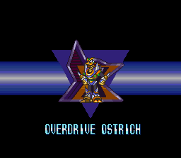

Por que a ordem dos chefes é importante?
Nos jogos da série Mega Man X, a ordem em que você enfrenta os chefes faz muita diferença na sua progressão.
Cada Maverick derrotado concede uma arma especial que normalmente é a fraqueza de outro chefe,
criando uma sequência estratégica que facilita muito as batalhas.
Seguir uma ordem eficiente permite derrotar chefes mais difíceis com muito menos esforço,
além de ajudar a conseguir upgrades importantes, como Heart Tanks e armaduras, com mais facilidade.
Explorar as fases na ordem correta também evita backtracking desnecessário, já que algumas áreas
só podem ser acessadas com habilidades específicas obtidas ao derrotar certos chefes.

Wire Sponge
Esponja elétrica que manipula redes de energia, melhor chefe para começar o jogo. Usa Strike Chain (correntes elétricas) e plataformas condutoras. Fábrica de energia com circuitos expostos. Fraco para Sonic Slicer, mas também toma bastante dano da buster.

Wheel Gator
Jacaré mecânico com rodas nos braços. Lança Spin Wheel (rodas serrilhadas) e usa seu corpo como moedor gigante. Vive em fábrica abandonada com trilhos e esteiras. Fraco para Strike Chain(arma obtida com o Wire Sponje).

Bubble Crab
Reploid caranguejo das profundezas oceânicas. Ataca com jatos de Bubble Splash que ricocheteiam nas paredes e pinças gigantes. Vive em cavernas subaquáticas cheias de plataformas móveis. Fraco para Spin Wheel(Wheel Gator).

Flame Stag
Cervo flamejante que domina o fogo. Investe com Speed Burner (chamas direcionais) e cria pilares de lava. Caverna vulcânica com lava subindo. Fraco para Bubble Splash(Bubble Crab).

Morph Moth
Uma mariposa mutante capaz de absorver sucata para evoluir, mudando de um casulo para sua forma de mariposa. Ele comanda o lixão de robôs para os X Hunters e é fraco contra a arma Speed Burner(Flame Stag).

Magna Centipede
Centopéia magnética que destrói com precisão. Dispara Magnet Mine (minas magnéticas) e se pendura no teto.Comanda a Base militar com túneis escuros dos Mavericks. Fraco para Silk Shot(Morph Moth).

Crystal Snail
Caracol cristalino que acelera com cristais. Dispara Crystal Hunter (cristais que ricocheteiam) e se encolhe em casca invencível. Sua base é uma caverna com rampas íngremes. Fraco para a Magnet Mine(Magna Centipede).

Overdrive Ostrich
Ex-Maverick Hunter da 7ª Unidade Aérea que perdeu a capacidade de voar. Corre em alta velocidade pelas planícies arenosas, lançando Sonic Slicer (discos cortantes) e ataques de dash. Fraco para o Crystal Hunter(Crystal Snail).